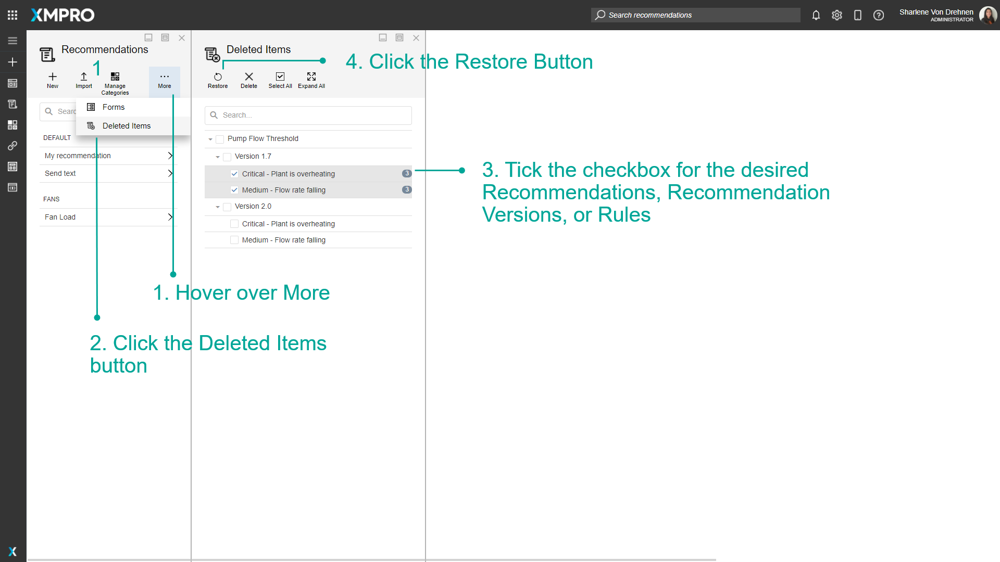
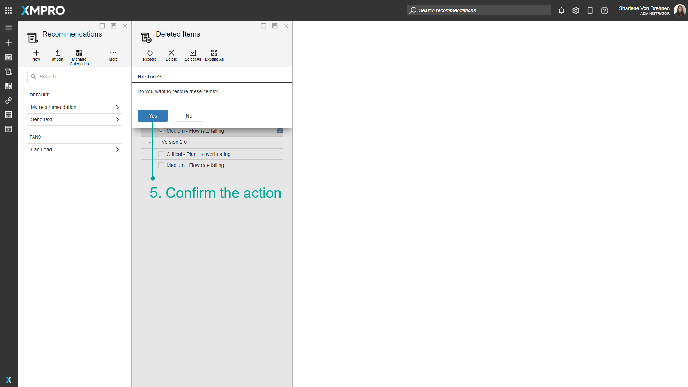
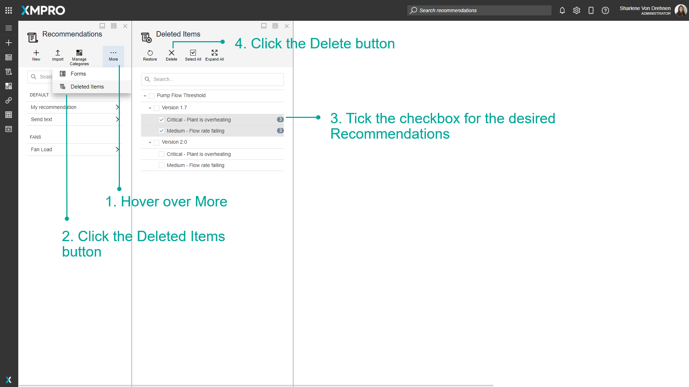
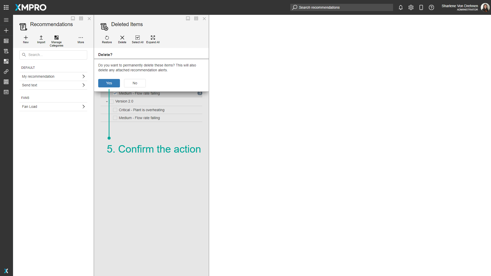

Manage Deleted Recommendation Items
When a Recommendation is deleted, it is moved to the Deleted Items. This is because there may still be archived Recommendation Alerts created by that Recommendation that you don't want to delete. Once Recommendations are moved to Deleted Items, they can be restored. This ensures nothing is deleted by mistake and allows you to retrieve deleted Recommendations again in the future if you realize they are still needed.
Note
It is recommended that you read the article listed below to improve your understanding of deleting Recommendations.
Restore Deleted Recommendation Items
To restore deleted Recommendations, follow the steps below:
- Hover over More.
- Click the Deleted Items button.
- Tick the checkbox for the desired Recommendations, Recommendation Versions, or Rules.
- Click the Restore Button.

5. Confirm the action.

Permanent Deletion of Recommendations
Warning
Recommendation Alerts will also be permanently deleted when permanently deleting items.
To permanently delete a Recommendations, follow the steps below:
1. Hover over More.
2. Click the Deleted Items button.
3. Tick the checkbox for the desired Recommendations.
4. Click the Delete Button.

5. Confirm the action.

Last modified: May 28, 2025